01#
首先就是这张图片啦（原图已发布在水楼）
网易云即将冲击Lv.10，听歌数还远远不够，于是想要找个歌单刷一下听歌量，于是就发现了这张专辑，放眼望去几乎都是天依言和乐正绫，再仔细看一下发现歌名也比较有意思，比如《来啊互相伤害啊》《有情人终成兄妹》《百亿兆狂热》这些歌名槽点非常多，吐也吐不完
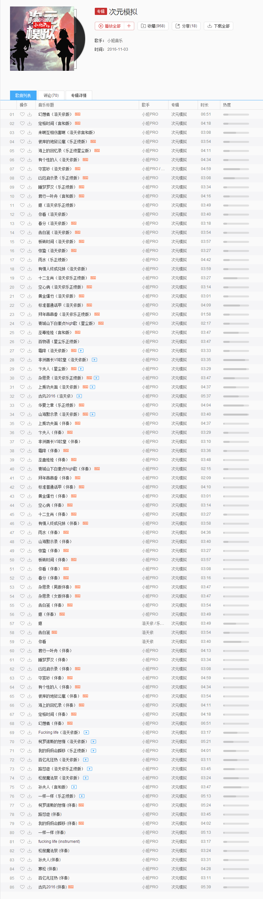
不仅如此，我还学会了截这么长的一张图的方法，还有滑稽表情的输入方法
最后放一下专辑链接：次元模拟
02#
那是很久很久之前，大概在两个月前吧，我在b吧看到……@#$%^&*……（中间过程已省略 ），直接上图吧（话说亲属或相关人那里的"和泉纱雾"是什么鬼？）：
），直接上图吧（话说亲属或相关人那里的"和泉纱雾"是什么鬼？）：
），直接上图吧（话说亲属或相关人那里的"和泉纱雾"是什么鬼？）：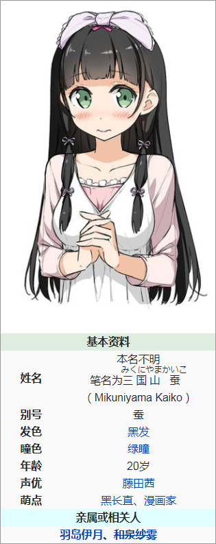
简单介绍一下：
三国山蚕是由平坂读创作、カントク负责插画的轻小说《如果有妹妹就好了。》及其衍生作品的登场角色。
新人漫画家。
特征是头上的一件发箍。
群马县人，老家在制作丝质内衣裤，因此对内衣裤有极为强烈的执著。
「三国山蚕」为其笔名，本名不明，有「绢惠」二字。
羽岛伊月作品《妹妹的一切》的漫画作者。
经历：
- 父母反对蚕成为漫画家，瞒着父母以「三国山蚕」的笔名从事漫画家。
- 头上的发箍布，是10岁时父亲送她的一件内裤折成的
- 作画时会把发箍拿下拆开，以「胖次套头」的方式将内裤罩在脸上。（什么！？她头上的蝴蝶结是胖次？！）
以下是她作画时的模样：
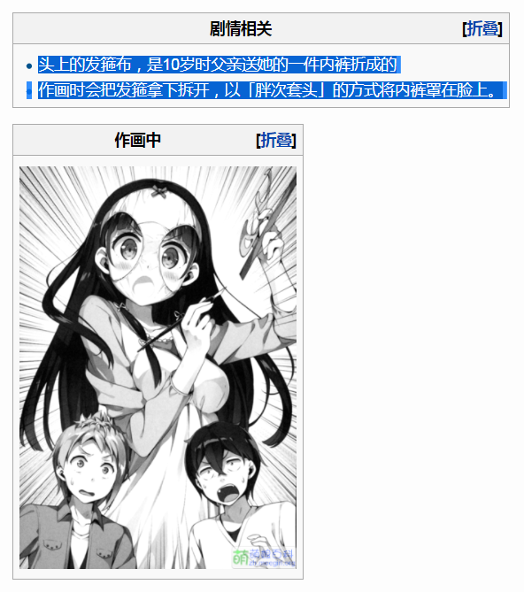
啊~ 胖次大师！~
等等！后面还有胖次蝴蝶结的教学：
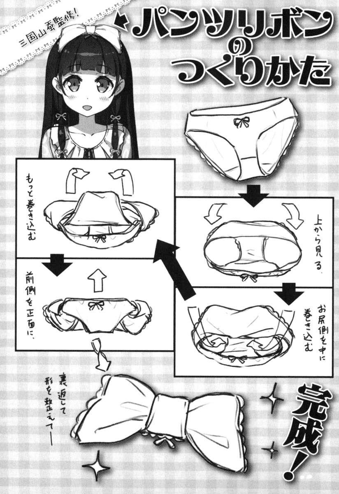
话说现实中真的有人做出来吗（表示怀疑0_0）
woc居然还真有！见下图：
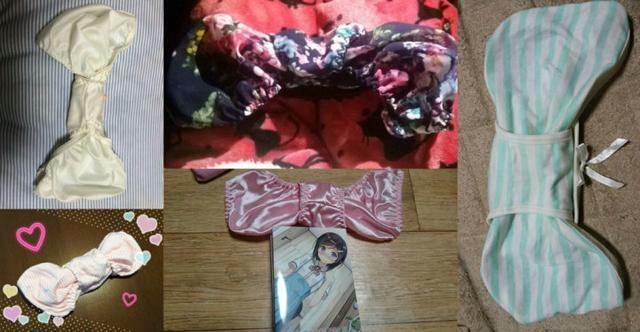
emmm好吧这件事就说到这里~
（表示并不想继续深入了，若想深入瞭解请参看《如果有妹妹就好了。》小说或者动漫）
顺便附上资料地址：三国山蚕
03#
这张图是我在网上找到的，按照上下左右的顺序说一下人物：
魔法少女小圆
博丽灵梦，（不认识），凉宫春日
食梦者玛利，乌贼娘，立华奏，初音miku
黑岩射手，吾王，魔法少女奈叶
等等居然还有一位我不认识 乛_乛
04#
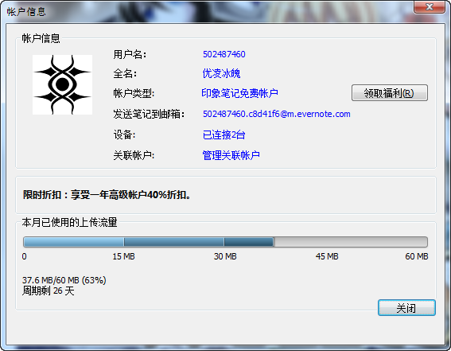
天呐！我写了两篇日记居然使用了本月63%的流量!!!∑(ﾟДﾟノ)ノ
还有27天呢！！照这样下来估计明天就不能用了.
思前想后还是升级会员好了 ￣へ￣
嘛，就酱了~
05#
测试一下gif图片的效果如何：
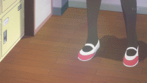
06#
我一直想知道这个表情包的来源可是一直找不到 0.0
07#
刚刚在贴吧打开链接看了看排版好像有些问题，罪魁祸首估计是那个（滑稽）表情，好吧从明天开始我用颜文字来代替（滑稽）了，就酱~
08#
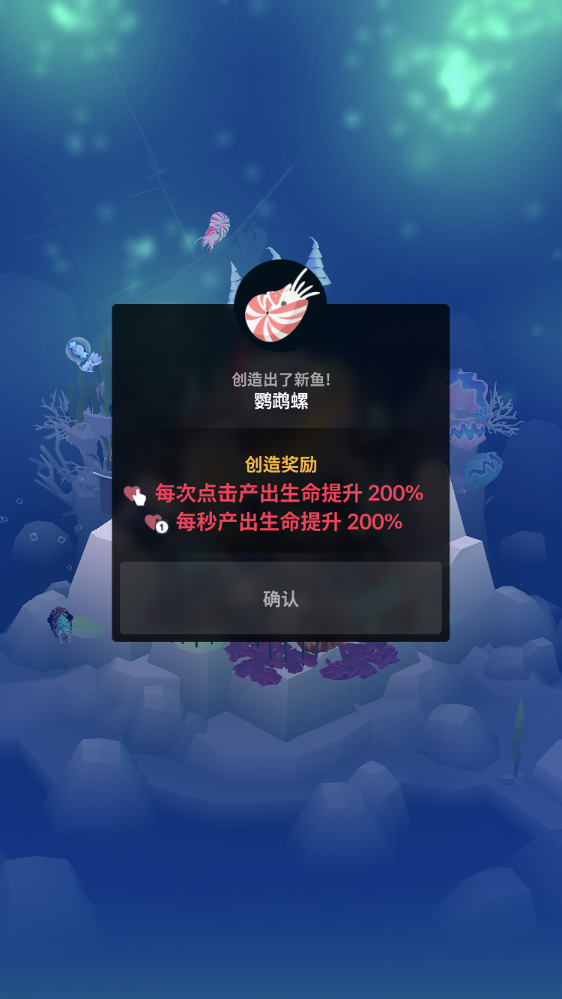
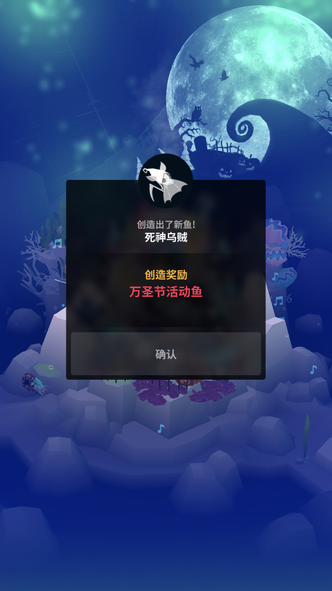
前段时间重新下载了深海水族馆，然而已经不想玩了，估计过几天就卸了~
09#
放两组NA对比图：
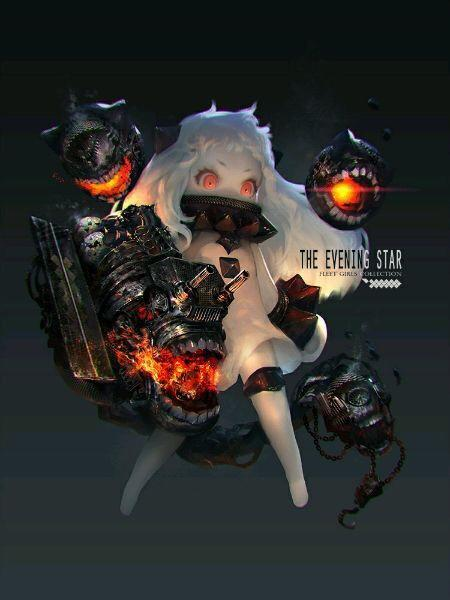
10#
不知道安卓版贴吧现在能不能看gif动图，若不能看 直接看这里吧~
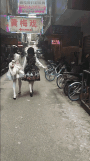
11#
今天挂载了VPN，p站一下就登上去咯~
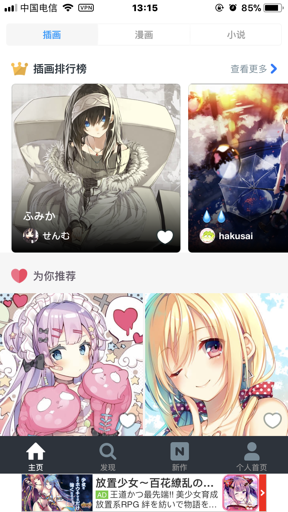
12#
自从得知乐动不会关服后又是一段时间未登录，不过新歌确实很给力，
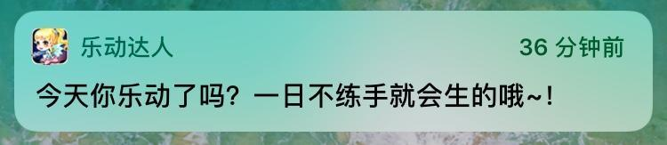
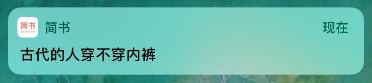
（#阴险）↓↓↓↓↓
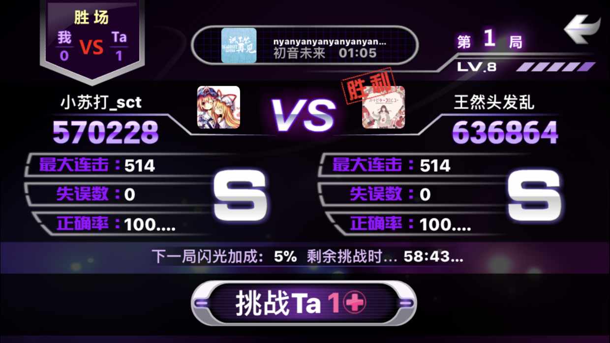
13#
昨天在为知上面领取了两个勋章~
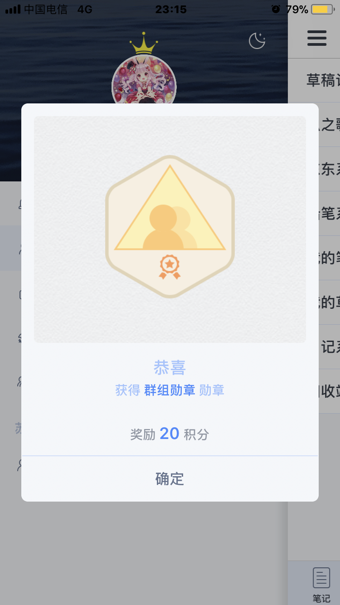
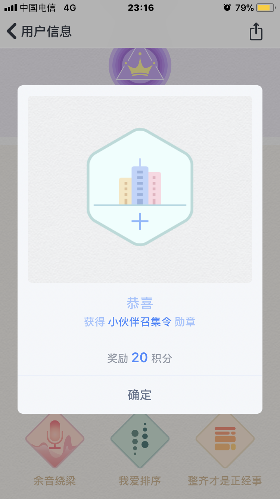
14#
明天网易云音乐将升为10级
噢耶ヾ(≧∇≦*)ゝ
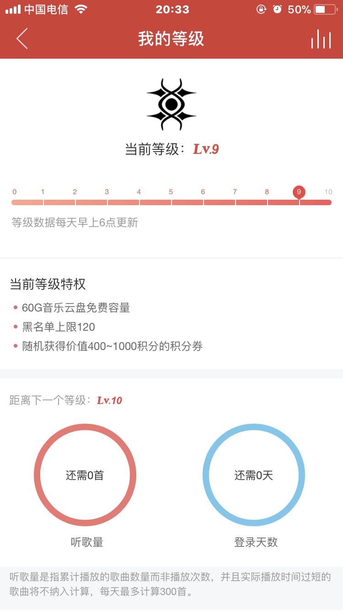
15#
这次又是b站看板娘吗（笑）
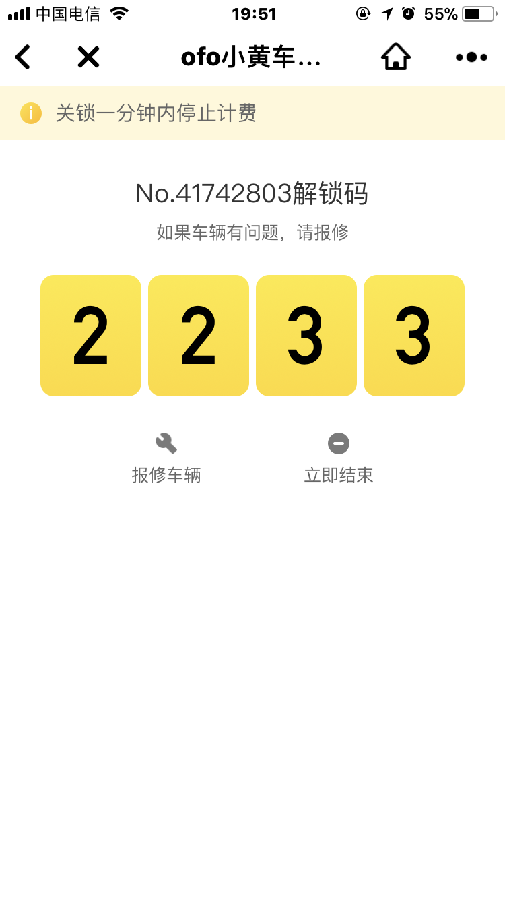
16#
唔…其实我一直都读作"搞基部"来着/托腮
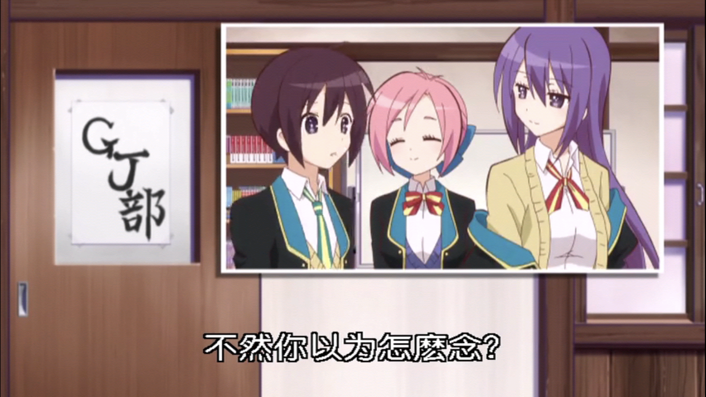
17#
今天就到这里了~
(¦3[▓▓] 晚安